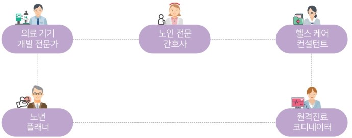

미래 직업
로봇
바이오
연결
안전
건강
건강
의료 기기 개발 전문가: 환자의 건강 증진을 위해 의료 기기를 설계하고 개발
노인 전문 간호사: 노인들의 건강관리를 책임
헬스 케어 컨설턴트: 질병 예방 및 치료를 위한 상담을 실시
노년 플래너: 노후를 건강하고 행복하게 보낼 수 있도록 설계
원격진료 코디네이터: 정보 통신 기술을 이용해서 멀리 떨어진 환자와 의사를 연결
